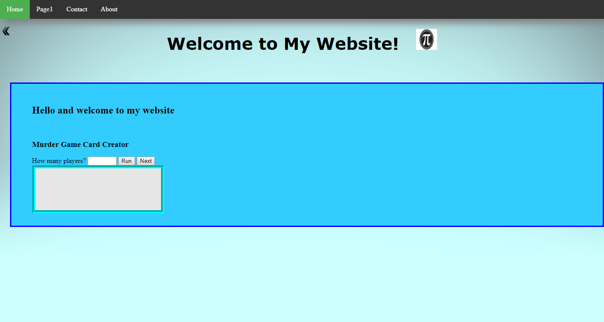
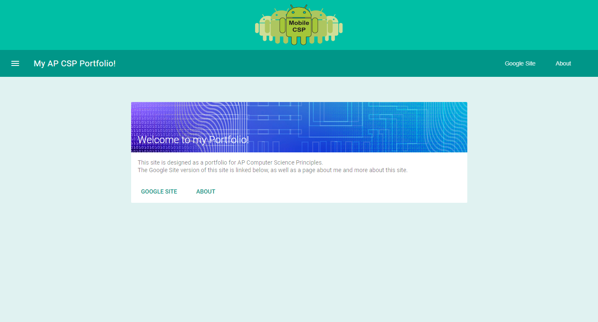
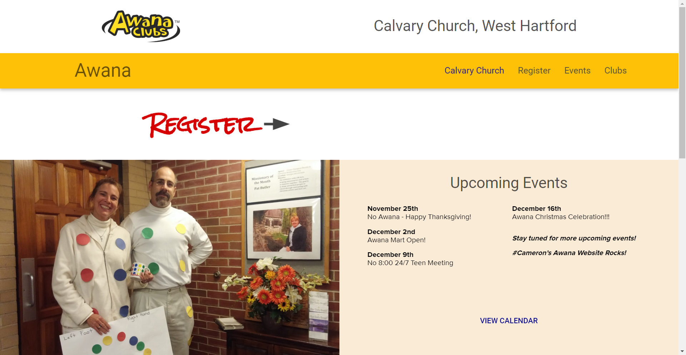
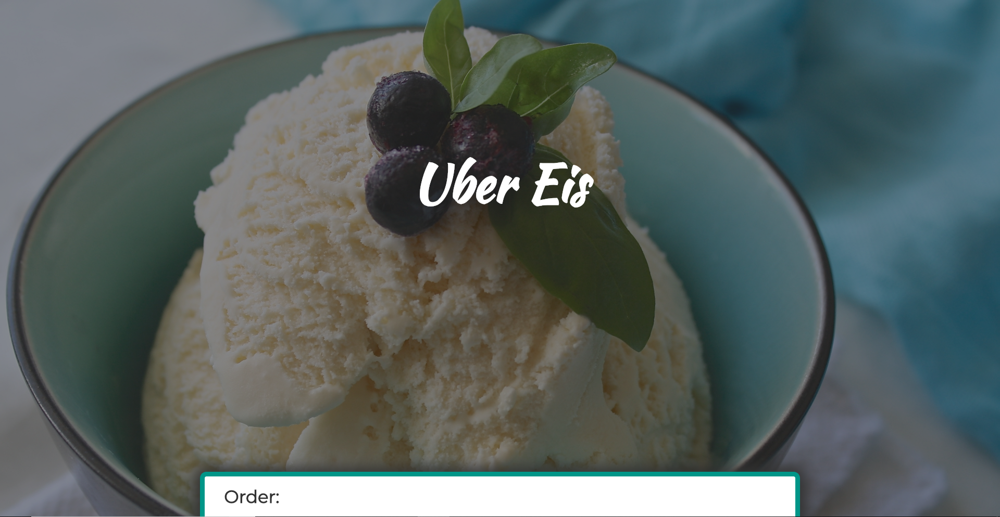
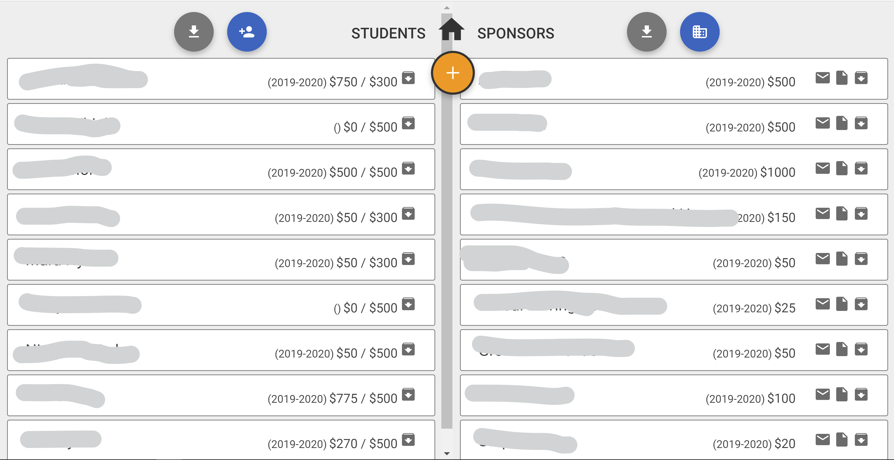

First Website
(Portfolio v1.0)
This was the first site I created. I first discovered html playing around with iChrome's customizable iFrame. I then learned more at W3Schools and there I found a growing interest for web development.
(view code)

ThePiGuy
(Portfolio v2.0)
Here I pieced together my small fragments of web-dev knowledge to create a basic site for myself. It's encouraging to see how far I've come :)
(view code)

Acquia Adventure
I got the opportunity to go to CodeDay Boston, a 24 hour coding experience where several team members and I got to turn an idea into a program. I worked with another young web developer to create this site about the game we created, and I learned so much from her and the entire experience.
(view code)

AP CSP Portfolio
We were supposed to just make a Google site for AP Computer Science Principles, but I used this opportunity to gain more experience by creating this portfolio throughout the year for the class. I tried out Google's material design framework for this.
(view code)

Awana
I worked on creating a site for the Awana program at our church, Calvary Church in West Hartford. The site was never really finished, but this site was my first experimentation after leaving Google's mdl design framework.
(view code)

Uber Eis
For many years I had dreams of making a small ice cream business! I'm still pretty proud of this little website; the idea was that people could order ice cream and we would bring it straight to them
(view code)

Robotics Data Site
Up to this point, this site was the biggest project I had yet taken. The purpose was to create a data center to keep track of student's fundraising for our local robotics team, Team Paragon 571. Through this, my knowledge of php and sql grew tremendously and I was very happy to have done this.